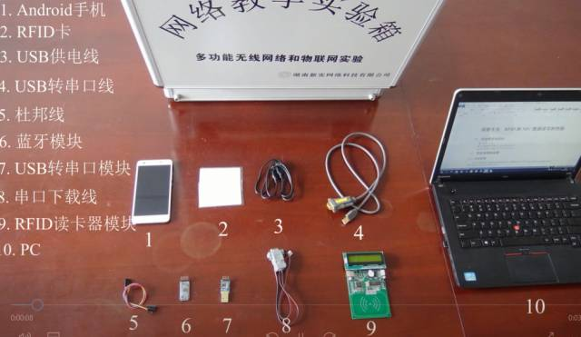

1. 关于我们
本教学系统致力于推动“无线网络技术”相关新兴课程的教学改革和课程创新实践，由高等学校畅销教科书《无线网络技术教程》课题组(http://www.thinkmesh.net/wireless/)和湖南新实网络技术公司(http://fastswitch.org/)联手开发，精心打造。
《无线网络技术教程——原理、应用与实验》（清华大学出版社，2017年3月第3版，2014年5月第2版，2011年10月第1版）课题组是目前国内高校IT专业中“无线网络”等相关新兴课程领域的领先建设者。本书几年来已被全国超过200所高校选为教学用书，包括众多985、211和地方重点高校。和同类教材相比，本书的一大特色是实验实践环节。课题组自始至终坚持理论与实践充分结合的理念，秉承开放共享的原则，提供了全套电子教案、实验环境、实验源码、实验视频、实验手册等。目前本书第3版内容全面更新，随书配套电子和实验资源见清华大学出版社网站(http://www.tup.tsinghua.edu.cn/booksCenter/book_07220201.html)。
湖南新实网络技术有限公司(http://fastswitch.org/)是国内计算机网络领域最具技术实力的教学科研设备供应商之一，开发的针对软件定义网络(SDN)课程的NetMagic系列设备已在清华大学、国防科大、东南大学、湖南大学、河北大学等众多高校的“计算机网络”、“路由与交换技术”、“高级网络技术”等课程得以广泛应用。并协助支持了多项863计划、973计划、国家自然科学基金、省市级科技项目。公司是中国计算机学会主办的中国计算机大会(CNCC)、中国互联网学术年会(ICOC)、全国高校网络工程专业建设研讨会等赞助商。
2. 实验教学系统的组成
- 无线网络技术实验手册，电子版超200页，含20项实测实验+15项仿真实验；
- 多功能无线网络和物联网实验箱，包含全部对应的硬件和软件；
- 所有实验源代码/执行文件/说明等；
- 面向各种协议的仿真实验环境；
- 所有实测/仿真实验的操作视频；
3.实验教学系统的用户对象
- 修读“无线网络技术”或相近课程的普通高校学生，包括计算机科学与技术、网络工程、物联网工程、通信工程、软件工程、信息安全、电子、自动化等专业本科生/硕士生/在职研究生等；
- 普通高校IT相关专业实验室的开放性实验（无线网络或物联网）的学习者；
- 对无线网络/物联网/智能嵌入式应用系统开发有兴趣，但缺乏实践能力和经验的初学者；
- 有志于开发软硬件结合的科技作品，参加物联网竞赛、挑战杯学术作品竞赛等的参赛者；
- 有关领域的工程技术人员。
4.开发实验教学系统的动机和目的
信息技术高速发展，目前高校IT部分课程的内容相对陈旧和滞后，难以实现学以致用，影响了教学效果。我们编撰出版《无线网络技术教程》，就是为了推动教学改革，为课程建设注入新鲜内容。教材已提供了自由下载的开放性实验内容，鼓励学生积极锻炼培养动手实践能力。这些实验内容丰富，供师生自主选择，但需自建实验环境。但许多高校师生反映，这种自建实验环境的模式有诸多不利，主要体现在：
- 教师自建实验环境，增加了教师负担和工作量；
- 有些师生遇到具体实验中的技术问题，缺乏有效咨询和解决途径；
- 有些学校由于各种条件所限，忽略了实验环节，降低了学习效果；
- 由于实验环境不统一和不规范，无法保障实验环节的的教学质量。
鉴于此，我们推出本实验教学系统，目的如下：
- 为“无线网络”相关或相近课程提供科学、规范、合理的实验环境；
- 为IT各专业学生针对无线网络和物联网技术领域进行理论学习和应用开发，提供丰富的实验实践教学资源；
- 让教学系统用户和教材读者通过行之有效的实践动手环节，培养软硬件系统的开发设计能力。
5.实验教学系统的优势
我们打造了国内首款面向高校专业教学的“无线网络和物联网实验教学系统”。
有一些专业性的教学仪器厂商提供了面向“传感器技术”、“物联网实践”等单一课程的传统意义上的实验箱设备，但是绝大部分实验箱仅面向一种或少数几种特定技术内容的实验，通常以硬件连接、结果验证为主，更多体现重复性操作和过程演练。而对于各种无线网络协议原理、系统功能设计、数据处理分析、软件应用开发等环节较少涉足，难以满足针对各种不同的无线网络和物联网技术原理进行学习的需求，也无法满足学生基于不同的无线网络和物联网技术针对现实生活中的不同场景进行开发、设计和应用的学习需求。
本实验教学系统致力于体现如下特点：
- 技术全面，支持几乎各种无线网络技术，如无线局域网/蜂窝网络/卫星网络/无线个域网/无线传感网/物联网应用/无线体域网/车载网络/室内定位/无线网络安全等；
- 原理直观展现，将复杂抽象的各种主流无线网络技术协议原理通过形象可视的实验界面予以展示；
- 提供了多个实测实践项目的完整实现过程，包括硬件组装/驱动烧录/硬件部署/信号测量/数据传输/数据处理/数据查询和显示等，既有硬件应用，也有软件设计开发；
- 为具备一定软件基础但缺乏硬件知识、或者具备一定硬件基础但缺乏通信网络知识的学习者提供有效的途径，以学习和掌握面向无线网络/物联网应用领域的嵌入式应用系统。
6.实验教学系统的实验项目介绍
仿真实验包括：
- 构建无线网络仿真实验环境
- 隐藏节点和暴露节点仿真
- 无线城域网WiMax仿真
- 卫星网络系统仿真实验
- AODV和DSR协议仿真实验
- DD和S-MAC协议仿真实验
- 水下无线传感网协议仿真实验
- IEEE 802.15.4和ZBR路由协议仿真实验
- CoAP协议仿真实验
- RPL协议仿真实验
- IEEE 802.11p和VANET协议仿真实验
- 无线室内定位仿真实验
- 无线网络攻击仿真实验
- Watchdog监测仿真实验
实测实验包括：
- AODV和DSR协议仿真实验。
- RFID数据读写/传输实测实验
- 无线网络环境RSSI测量实验
- 无线局域网组网与管理实验
- 无线局域网信号测量软件开发实验
- 无线局域网数据分组分析实验等

AODV和DSR协议仿真实验
RFID数据读写/传输实测实验
7. 实验教学实例和视频
本实验视频为《无线网络技术教程》(第3版，清华大学出版社，2017)的配套实验教学视频，目前一共37项实验。
- 7.1 AODV和DSR协议仿真实验
- 7.2 RFID数据读写/传输实测实验
动态源路由协议DSR(Dynamic Source Routing)仿真实验，其中各节点先通过RREQ/RREP(路由请求/路由应答)建立起相互间的路由，然后利用DSR动态源路由协议对各节点之间建立的路由进行确定和维护，提供快速式反应服务，确保数据分组的高效交付。
点击链接可看AODV协议仿真实验短视频演示。
视频链接：https://v.qq.com/x/page/c05081dcl0j.html
百度云下载链接：http://pan.baidu.com/s/1eR9dnoe 密码：ob46
RFID读卡器先读取卡号，通过蓝牙模块，将卡号数据发至手机APP(开放源码)中，可与APP中已有卡号信息比对验证。可体会RFID/蓝牙/手机APP等环节连贯性，实际展现了一个真实的卡应用系统开发设计过程。学生可二次开发成面向校园卡(工作卡)的考勤管理、库存管理等，用于毕设或竞赛作品。
点击链接可看短视频演示。
视频链接：https://v.qq.com/x/page/i05095d4tj1.html
百度云下载链接：http://pan.baidu.com/s/1bpvmzCz 密码：tf3c
8. 实验教学的学时和学期安排
以上实验视学生能力不同，需要不同学时，全部完成约24-32学时。教师在具体学时安排中，可考虑选做其中部分实验。
实验教学一般要求和理论课程同步进行，建议可考虑“先实验、后教学”，即前半学期以理论课为主，后半学期以实验课为主。
9. 无线网络技术教学开源社区
我们将致力于打造“无线网络技术教学开源社区”，继续秉承开源共享的原则。
- 本教学系统中，提供所有实验实例的源码、可执行文件、技术文档等。
- 鼓励各高校师生和教材读者积极参与，共同创造更多更好的无线网络/物联网技术的实验和实践案例，并将其纳入实验教学系统；
- 追随技术进步的步伐，不断推陈出新，引领国内高校“无线网络”相关领域课程的理论和实验教学，为教学改革和创新实践作出贡献。
10. 多功能无线网络和物联网实验箱的购买
目前已推出标准版多功能实验箱，由湖南新实网络公司统一销售和提供服务。目前已在宁波大学、国防科大(武汉)正式使用。并陆续在浙江大学、中山大学、国防科大(长沙)、中南林业科技大学、云南大学、重庆文理学院等开展试用。
湖南新实网络：http://fastswitch.org/
湖南新实网络电话：0731-82033926
湖南新实网络客服QQ：2535499817